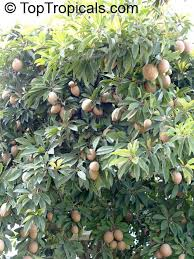

<!DOCTYPE html>
<html>
    <head>
        <title>
           Chikko
        </title>
        <h1>
           Chikko
        </h1>
        
    </head>

    <hr>

    <body>
        <p>
            Sapota requires a temperature range of 11
            to 34o
            C and an annual precipitation of
            225-375 cm. It can be grown in all types of
            soil, but well drained soil is necessary for good
            growth.
        </p>
       
        <h2>Varieties</h2>
        <p>
            Cricket Ball, Oval, Kalipatti, Badami,
            Baramasi, Calcutta Round, Pala and PKM-1
        </p>

        <h2>Propagation</h2>
        <p>
            It is propagated through layers and grafts.
            Manilkara hexandra (khirni) is the best
            rootstock for inarching sapota.
        </p>

<h2>Season</h2>
<p>
    The season of planting is May-June.
    Planting should be avoided during the
    periods of heavy rains.
</p>

<h2>Planting</h2>
<p>
    Planting is done in pits of 60 cm x 60 cm x
    60 cm at a square spacing of 7-8 m.
</p>


<h2>Manuring</h2>
<p>
    The recommended nutrient dosage for a
    full-grown sapota tree per year is:
</p>
<p>
    FYM 55 kg
N:P2O5
:K2
O 500:360:750 g
</p>
<p>
    Apply FYM in May-June with the
onset of monsoon. Apply the fertilizers
in two equal split doses, the first during
May-June and the second during AugustSeptember.
</p>
<p>
    Apply the manures and fertilizers in
trenches 30 cm deep taken at a distance of
1 m from the base of the tree.
</p>

<h2>Irrigation</h2>
<p>
    Irrigation may not be necessary except
    during the early stages and in the hot
    weather; but good crops can be obtained
    with irrigation.
</p>


<h2>Training and pruning</h2>
<p>
    No pruning is necessary; but in old trees,
    lower branches can be removed up to 1 m
    height.
</p>

<h2>Flowering and fruiting</h2>
<p>
    The tree flowers continuously in several
    flushes at short intervals throughout the year.
    But there are two seasons when flowers will
    be produced profusely i.e., October to
    November and February to March. Grafted
    sapota begins to bear in the third year after
    planting. Fruit production increases with age
    up to 30 years followed by a decline. Fruits
    mature about 4 months after flowering
</p>

<h2>Harvesting</h2>
<p>
    Mature fruits, which are dull brown in
    colour, are harvested and stored for about five
    days before they are fully ripened for
    consumption. Ripe fruits can be kept for about
    5 to 7 days.
</p>

    </body>

</html>